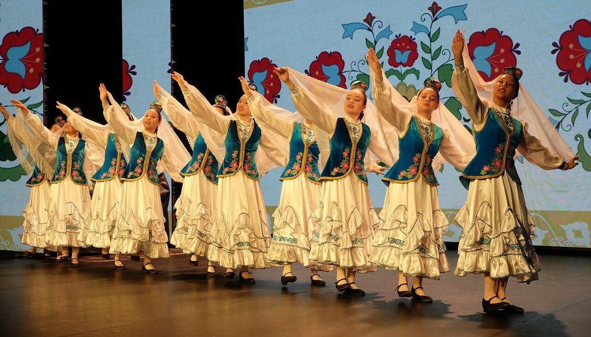
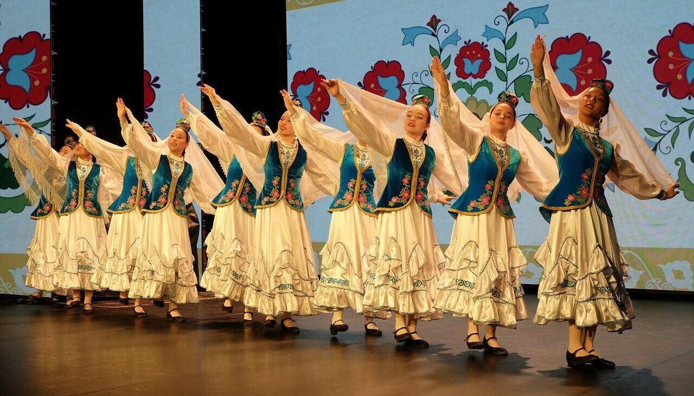

Татарский народ
Второй по численности народ России с богатой культурой и историей
О народе
Татары — один из крупнейших тюркских народов России, с богатой историей и культурой. Исторически они связаны с Волжской Булгарией и Золотой Ордой, а позднее — с Казанским ханством. Сегодня татары живут преимущественно в Татарстане, Башкортостане, Сибири и крупных городах России, сохраняя свою уникальную культуру и язык.
Татарская культура отличается музыкальными и танцевальными традициями, кулинарией и народным искусством. Татарская кухня славится блюдами, такими как эчпочмак, кыстыбый и чак-чак. Народные праздники, например Сабантуй — древний аграрный праздник урожая — до сих пор широко отмечаются и привлекают внимание туристов.
Татары говорят на татарском языке, который относится к тюркской группе, и на русском языке. Современные татары активно сохраняют культурное наследие через литературу, театр, музыку и образовательные программы, сочетая традиции с современными тенденциями.
Фотогалерея
 
